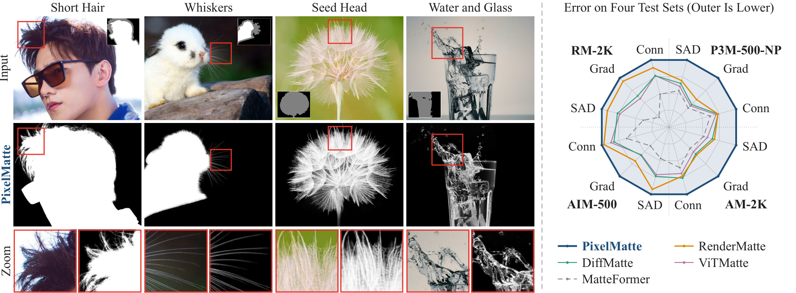
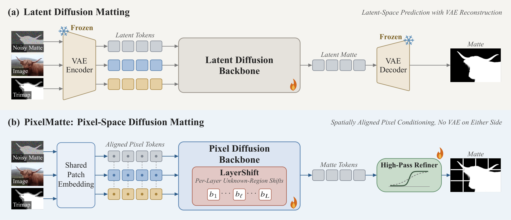
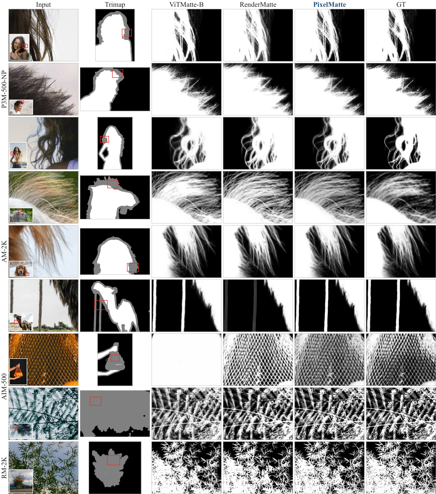
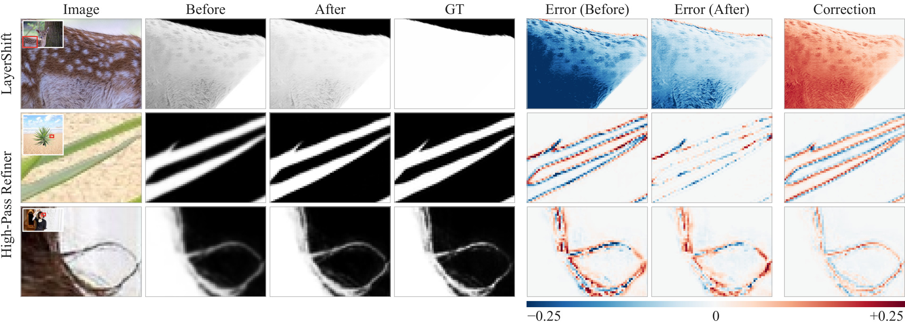

PixelMatte: High-Fidelity Image Matting with Pixel-Space Diffusion Transformers

Abstract
Diffusion models have shown strong potential for image matting by transferring generative priors learned from large-scale pretraining. However, existing approaches largely rely on latent diffusion models, whose compressed representations and VAE-based reconstruction introduce a mismatch with the high-frequency precision required for matting. We present PixelMatte, a framework that adapts pretrained pixel-space diffusion transformers for high-fidelity image matting. We show that strong image-conditioned matting capabilities can be acquired even from a pure text-to-image model without paired image-to-image pretraining. Our approach reuses the backbone's native patch embedding to jointly process the input image, trimap, and noisy alpha matte as spatially aligned tokens, enabling direct pixel-space prediction without additional condition encoders or adapters. With pixel-accurate synthetic supervision and real-image fine-tuning, PixelMatte predicts alpha mattes in a single forward pass. Two lightweight calibration modules, LayerShift and High-Pass Refiner, further improve regional opacity accuracy and boundary fidelity. Experiments across four benchmarks and two distinct pixel diffusion backbones demonstrate substantial improvements over existing methods, reducing SAD and gradient errors by 24–44% relative to RenderMatte on P3M-500-NP and AM-2K, while achieving competitive performance on AIM-500 and RenderMatte-2K. These results demonstrate the effectiveness of pixel-space generative priors for precision-sensitive image matting.
Method
Latent diffusion matting predicts the matte as a compressed code between a frozen VAE encoder and a frozen VAE decoder. PixelMatte removes both: a pretrained pixel-space diffusion transformer reads the image, the trimap and the noisy matte as pixel tokens and writes the alpha matte directly.
- Spatially aligned conditioning. The image, the trimap and the noisy matte go through the backbone's own patch embedding and share one spatial grid, so no condition encoder or adapter is added.
- One-step prediction. After fine-tuning on pixel-accurate synthetic composites and real photographs, the model predicts the matte in a single forward pass.
- LayerShift. One learned vector per transformer layer, added to the tokens of the unknown region while the backbone stays frozen, calibrates regional opacity.
- High-Pass Refiner. A small residual network whose output passes through a high-pass operator sharpens boundary transitions of the predicted matte.

Results
We evaluate two backbones, PRX-7B and HiDream-O1-Image 8B, on P3M-500-NP, AM-2K, AIM-500 and RenderMatte-2K with their released trimaps. Inference is a single forward pass without test-time augmentation.
| Method | P3M-500-NP | AM-2K | AIM-500 | RM-2K | ||||
|---|---|---|---|---|---|---|---|---|
| SAD | Grad | SAD | Grad | SAD | Grad | SAD | Grad | |
| ViTMatte | 7.1 | 10.6 | 7.7 | 6.2 | 17.8 | 13.7 | 4.5 | 4.8 |
| DiffMatte | 6.6 | 10.0 | 6.8 | 5.7 | 17.2 | 13.5 | 4.3 | 4.4 |
| RenderMatte | 6.2 | 8.2 | 6.5 | 5.5 | 13.6 | 11.2 | 3.6 | 3.0 |
| PixelMatte (PRX-7B) | 4.7 | 5.6 | 4.6 | 3.4 | 12.7 | 8.5 | 3.5 | 3.2 |
| PixelMatte (HiDream-8B) | 4.3 | 4.6 | 4.4 | 3.1 | 12.6 | 7.7 | 3.3 | 2.8 |
SAD and Grad, lower is better; best in bold. Results of prior methods are the published numbers collected by RenderMatte. The paper reports all nine compared methods with MSE and Conn.

Opacity and Boundary Calibration
The two calibration modules act on different errors of the one-step prediction. LayerShift adjusts opacity over extended regions, and the High-Pass Refiner makes localized corrections along object contours.

BibTeX
@article{yang2026pixelmatte,
title = {High-Fidelity Image Matting with Pixel-Space Diffusion Transformers},
author = {Yang, Baihan and Lin, Xin and Wei, Yufan and Li, Baiang and Liu, Yuheng and Tian, Juanxi and Xie, Xiaohui and Nguyen, Truong},
journal = {arXiv preprint},
year = {2026}
}